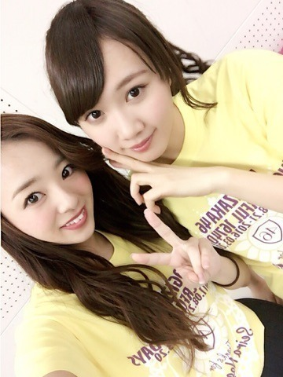

| 2016/03 23 Wed | 川村真洋 らりん卒業。 らり んのばーか♡♡ まひろ |
こんにちわ♡
川村 まひろです...
とうとうだよ．1番側で居てくれた仲間が卒業してもぉたよ？（ ; ; ）涙
らりん。。。

らりんへの気持ちを改めてblogに書くつもり
でした． でも私の気持ちは全部お手紙に書いてらりんに渡しました.＊
liveの時にサプライズとして，ステージ上で本人の前で読みました...
ファンの皆さんから，その手紙聞けなかった人も居るからどこかに載せて欲しいってご意見を頂いたので，そのままコピーして貼りますね(^_-) 本当の素直な気持ちを書きたい．と言う気持ちで書いた手紙です．
せいらりんへ...
らりんの存在が当たり前になり過ぎて，実はまだ実感ないねんけど，「らりん、卒業おめでとう．」 武道館のアンダラ前日の夜に，「ゆうりの家に集まって欲しい」って突然連絡がきて，お風呂上がりに急いで用意して行ったら，らりんの口から「明日卒業発表する」って言われて...
あん時はゆうりと2人でめっちゃびっくりして，びっくりし過ぎて，「ぇ...ホンキでゆーてる？うそやろww 笑」ってゆうて笑いながら絨毯の上に転がり落ちたりしてたけど，正直，そん時な，「なんでやねん！何で卒業しちゃうんよ。」って思ってた... 「まあ，そぉやんな，もうそんな時期でもあるもんな」とか言ってたけど...ホンマはすごい寂しかったなぁ...
らりんは1番ずっと一緒におった仲間やから...． まひろは大阪から，らりんは名古屋から，同じ日に上京してきてさ，最初はまだ住む所も無かったから，1ヶ月間2人でホテル暮らししたね^ ^ ホテルのパン食べすぎで体重やばいことなったり，2人で夜ランニングやウォーキングに行ったのも覚えとる？2人でしか話せないことも話して，いーっぱい一緒にバカして大笑いして，時には2人でめちゃくちゃ愚痴ったこともあったね^ ^「何で他の子も同じことやっとるのにウチらだけ怒られんねん！」とかね．そぉゆうことまでもが全部思い出やわ♡
らりんの笑顔がホンマに好きで，いつも明るくて元気ならりんがホンマにだいすき！
でもやっぱり，この四年半，楽しい事ばかりじゃなかったね．辛いこともあったね．何度も何度も心がズタボロになって，何回も逃げ出したくなったよね， でも、いつか奇跡が起きるんじゃないか．って希望だけを信じてがむしゃらに頑張ったてきたね... らりんはいつも全力だから，すぐどっかにぶつかってもーて，見えない所で泣いて，ウチらの前では笑ってみせて... でもすぐ分かるんよ，まひろにはお見通しだよ． 一時期，らりんが急に激やせして，笑顔が少なくなった時期があった． その時は毎日毎日，仕事で会う度にらりんの顔うかがってたんやで？ 早く元のらりんに戻らんかなぁ...どおしたらぃいやろ？何かしてあげれる事無いかなぁ？って考えてた．．まひろがおかしくなりそうな時はらりんの笑顔に救われたから，いつもすぐ気にかけてくれて，心配してくれて，真剣に話も聞いてくれた，今まで沢山らりんに助けられてきたから，絶対にらりんに何かあった時は，「まひろがらりんを救ってあげるんや！」って思いが強かったの。 らりんを応援してるファンの皆も，絶対にらりんの笑ってる顔が1番やと思っとるはず．
ライブのリハ期間に入ると，リハ中に「今日もダンスよろしく！」みたいな事を目で訴えかけてきて，リハ後も遅い時間まで2人でダンスの練習いっぱいしたね^ ^ いつもそうやって頼ってくれて嬉しかったよ？ だかららりんが卒業する．ってなっちゃうと，教える相手がいなくなっちゃうのが何だか寂しいわ...笑 でもそれ以上にまひろがらりんに色々と頼ってばっかだったかもね^ ^？ まひろはバカでステージとかでも特に面白い事言える訳じゃないから，トークとかではホンマに助けられた^ ^ぇへへ らりんは単なるメンバーじゃなく，姉妹のような特別な存在．
これから壁にぶつかる事もあると思うけど，笑顔だけは忘れず，前を向いて歩んでください！
それに！らりんの事が大好きで大好きで 一生懸命応援し支えてくれたファンの皆さんの事も絶対に忘れないでね^ ^
らりんに出会えて良かった！らりんに出会えたことはウチらの人生にとっての最大の宝物や． 四年半本当にお疲れ様... 今まで本当にありがとう！！ 自分の生き方に自信を持って生きてください．
まひろより。
以上。
ちなみに、実は言わなくていいかなと思ってたんだけど，46時間TVのカラオケ採点バトルの時に歌った「ひまわりの約束」は， 卒業してしまうらりんへの気持ちも込めて歌いました♡ぇへへ
裏話なんだけど，liveの日，私の両親とらりんの両親の4人でお茶しに行ったみたいです...。 今度は私とらりんまじえて6人で、、、、 行きたいけど、らりんには「やーだーーー（≧∇≦）笑」って言われそう。。 らりんは意外と親の前では仕事の話とかしない子だから♡♡
あとね，らりんがラジオでいつもお世話になってる，まーさんにね，
「らりんの後継ぎはまひろに任せたぞ！ がんばれよ！」って言われました。。。 ぅう（ ; ; ） うれしー、けど頑張らなきゃー、、
らりんと同じ形で皆を引っ張ることは私にはできないけど、私は私のやり方で、引っ張っていけるよう頑張る。。。
よし！ これからもらりんに頼りまくるぞぉぉぉ♡♡♡笑ノぇへへ
またね.＊